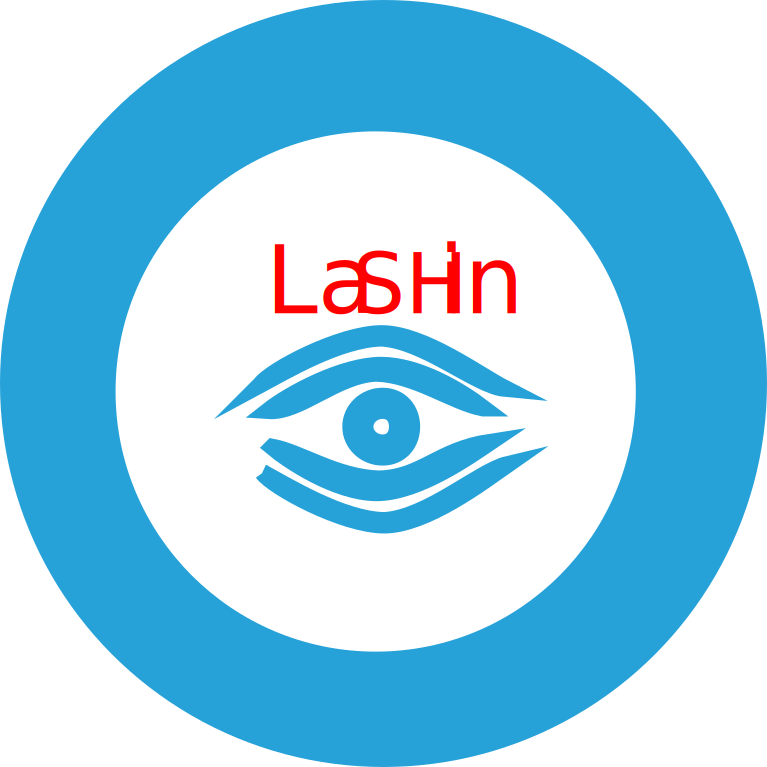
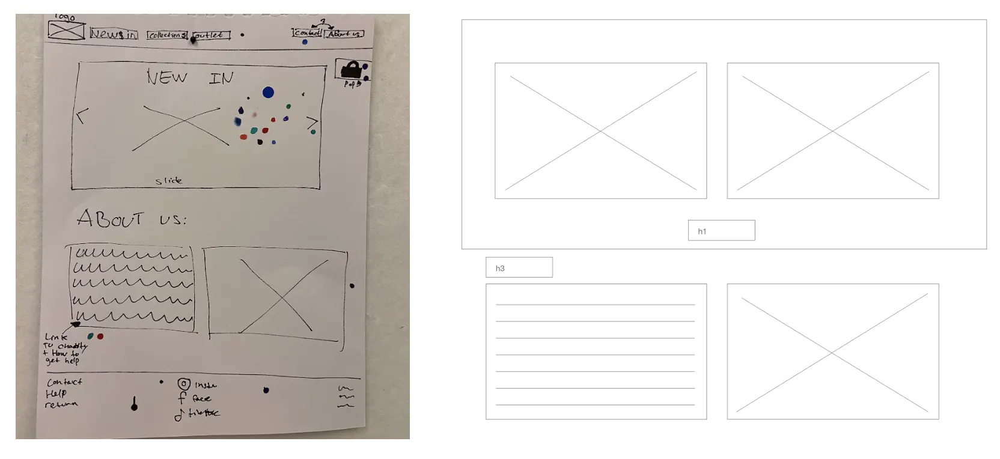
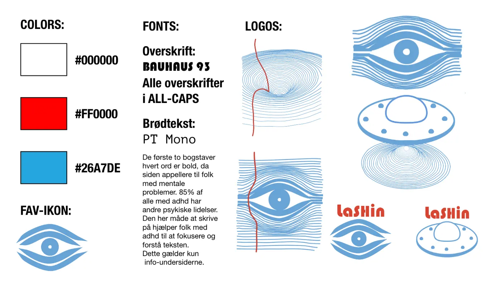
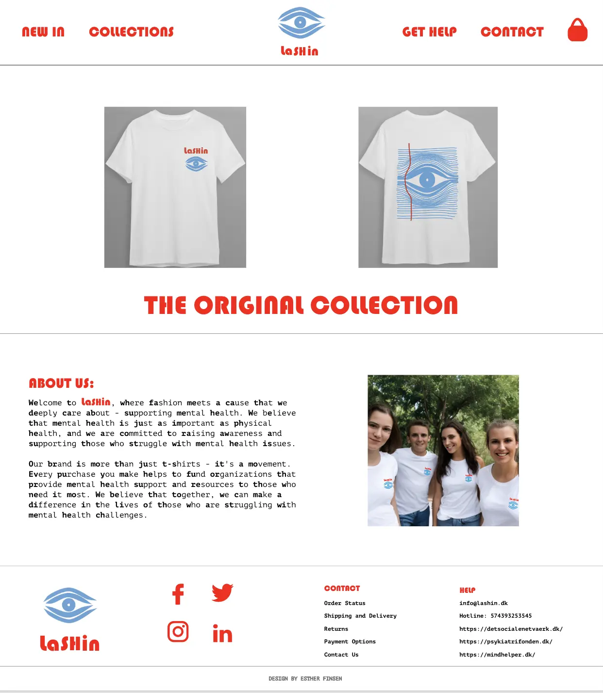
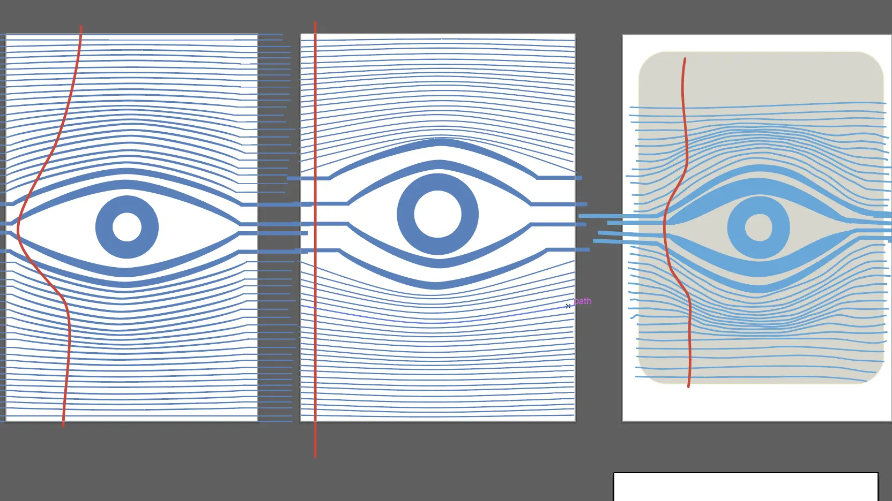
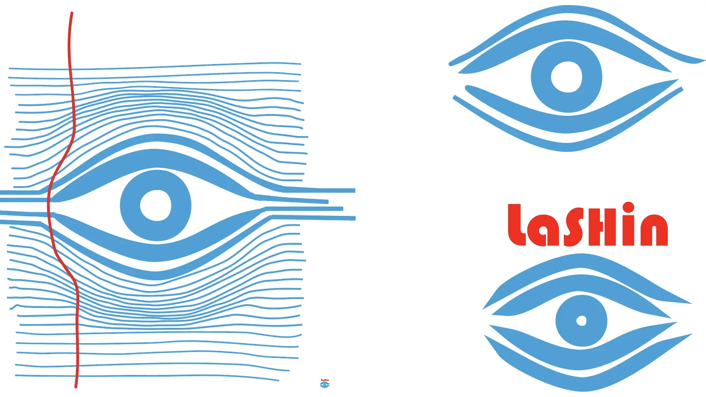

PITCH // LASHIN
Det tredje tema vi havde, var PITCH. Her havde vi fokus på brugervenlighed, og det at skabe et
produkt ud fra en række ux-research's af et bestemt emne. Jeg havde her valgt at have fokus på
pasform,
farvevalg og mentalt
helbred.
I min research brugte jeg metoder som, desktop research, survey, observation og interview. Ud fra
mine svar af dette kunne jeg udforme og præcisere mit koncept, ups og målgruppe og skabe et
responsivt design.
Mit design af t-shirtene, prototypen og logoet udformer sig af min grundlæggende ide om designet af
et øje. Jeg
skitserede her forskellige øjne, for at kunne til- og fravælge. Herefter valgte jeg stilen Memphis,
og fonten Bauhauss
93.
Jeg inddrog ui elementer som "next" og "previous" knapper, på cart-siden har jeg brugt microcopy i
form af "click to
type" og den informerende box om donation.




